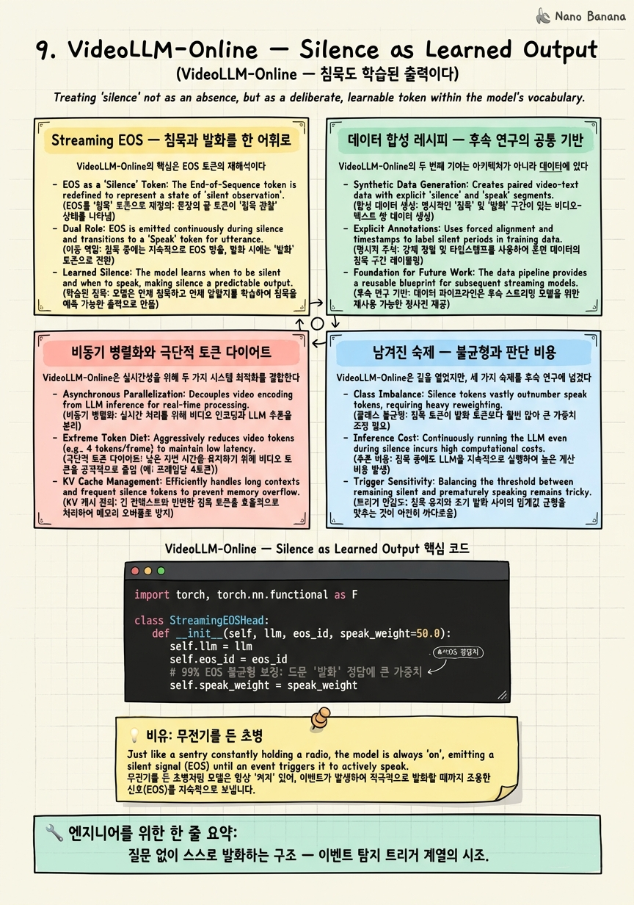

VideoLLM-Online — Silence as Learned Output

🎯 학습 목표
- proactive(스스로 발화) 구조가 reactive(질문 응답)와 어떻게 다른지 안다
- Streaming EOS가 '언제/무엇을 말할지'를 하나로 통합한 방식을 설명한다
- 오프라인 라벨을 스트리밍 대화로 바꾸는 합성 레시피의 의의를 안다
- 99% EOS라는 클래스 불균형 문제와 그 위험을 이해한다
- 판단에도 풀 LLM을 돌리는 비효율이 StreamMind·StreamBridge의 공략점임을 안다
이제 마지막 단계, Stage ③ 트리거로 들어간다. 이것이 이벤트 탐지의 본체다. 지금까지의 논문들은 대부분 "질문이 오면 답하는" reactive 구조였다. Stage ③은 다르다 — 아무도 안 물어봐도, 그 순간이 오면 스스로 입을 여는 proactive 구조를 만든다.
그 계보의 시조가 VideoLLM-Online(CVPR 2024, LIVE 프레임워크)이다. 이 논문의 통찰은 우아하다 — "침묵도 학습된 출력이다".
기존 사고방식에서는 "언제 말할지"(탐지)와 "무엇을 말할지"(생성)가 별개 문제였다. VideoLLM-Online은 이 둘을 EOS(End-Of-Sequence)라는 어휘 하나로 통합한다. 프레임마다 다음 토큰을 예측하는데, 그 토큰이 EOS면 "지금은 침묵"이고 일반 토큰이면 "지금 말한다"가 된다. 별도의 탐지기 없이, autoregressive 예측 하나로 탐지와 생성을 한 몸으로 만든 것이다.
이 논문은 또한 데이터 합성 레시피를 세워, 이후 거의 모든 스트리밍 트리거 연구가 이를 계승한다. 다만 시조인 만큼 비효율도 남겼다 — 1토큰 판단에조차 무거운 LLM을 매 프레임 돌린다. 이 비효율이 다음 장 StreamMind·StreamBridge의 정확한 공략 지점이 된다. 이 챕터는 그 우아한 아이디어와 남겨진 숙제를 함께 본다.
핵심 내용
Streaming EOS — 침묵과 발화를 한 어휘로
VideoLLM-Online의 핵심은 EOS 토큰의 재해석이다.
일반적인 LLM에서 EOS는 "문장의 끝"을 뜻하는 특수 토큰이다. VideoLLM-Online은 이것을 스트리밍 맥락에서 재정의한다 — "지금은 말할 때가 아니다"라는 신호로.
작동은 이렇다. 프레임이 하나 들어올 때마다 모델은 다음 토큰 하나를 예측한다.
-
예측이 EOS면 → 침묵하고 다음 프레임을 기다린다.
-
예측이 일반 토큰이면 → 그 토큰부터 시작해 문장을 생성한다(발화).
이 단순한 규칙이 탐지와 생성을 통합한다. "언제 말할지"는 EOS냐 아니냐로 결정되고, "무엇을 말할지"는 EOS가 아닐 때 이어지는 토큰들로 결정된다. 별도의 이벤트 탐지 모듈, 별도의 트리거 분류기가 필요 없다 — 모델의 autoregressive 예측 하나에 전부 녹아 있다.
\[\text{매 프레임: } \hat{t} = \text{LLM}(\text{frames}) \quad \begin{cases} \hat{t} = \text{EOS} & \to \text{침묵} \\ \hat{t} \neq \text{EOS} & \to \text{발화 시작} \end{cases}\]
"침묵도 학습된 출력"이라는 표현의 의미가 이것이다. 모델은 "언제 조용히 있어야 하는지"를 명시적으로 학습한다. 침묵은 아무것도 안 하는 상태가 아니라, EOS를 능동적으로 예측하는 하나의 결정이다. 이 관점 전환이 proactive 스트리밍 VLM의 문을 열었다.
데이터 합성 레시피 — 후속 연구의 공통 기반
VideoLLM-Online의 두 번째 기여는 아키텍처가 아니라 데이터에 있다. 그리고 이것이 어쩌면 더 오래 남은 유산이다.
문제는 이렇다. "언제 말해야 하는가"를 학습시키려면, "이 순간엔 침묵(EOS), 저 순간엔 발화"라는 시점별 정답이 붙은 스트리밍 대화 데이터가 필요하다. 그런데 이런 데이터는 세상에 거의 없다.
VideoLLM-Online의 해법은 기존 오프라인 라벨을 재활용하는 것이다. 예를 들어 Ego4D 같은 데이터셋에는 "몇 초에 무슨 행동" 같은 타임스탬프 라벨이 이미 있다. 이 라벨을 LLM으로 스트리밍 대화 형식으로 변환한다 — 라벨이 붙은 시각을 "말해야 할 시점(발화)"으로, 그 사이를 "침묵(EOS)"으로 만들어 스트리밍 대화를 합성하는 것이다.
\[\text{오프라인 라벨(행동 타임스탬프)} \;\xrightarrow{\text{LLM 변환}}\; \text{스트리밍 대화(발화 시점 + 침묵 구간)}\]
이 레시피의 영향력은 지대하다. 이후 스트리밍 트리거 연구가 거의 전부 이 방식을 계승한다. 3장 Dispider의 Decision 학습도, 10장 StreamBridge의 Stream-IT 데이터셋도 이 "오프라인 라벨 → 스트리밍 대화" 계보 위에 있다. 새로운 데이터를 처음부터 라벨링하는 대신, 이미 있는 라벨을 스트리밍 형태로 재활용하는 것 — 이 데이터 전략이 스트리밍 트리거 분야 전체의 실용적 기반이 되었다.
비동기 병렬화와 극단적 토큰 다이어트
VideoLLM-Online은 실시간성을 위해 두 가지 시스템 최적화를 결합한다.
첫째, 극단적 토큰 다이어트다. 프레임당 비주얼 토큰을 10개 수준까지 줄인다. 2장 TimeChat-Online이 변화 패치만 남긴 것, 3장 Dispider가 세그먼트로 뭉친 것과 같은 방향이되, 여기서는 아예 프레임당 토큰 수 자체를 극단적으로 압축한다. 매 프레임 판단해야 하니, 프레임당 입력이 작아야 실시간이 가능하기 때문이다.
둘째, 비동기 병렬화다. 비디오 인코딩, LLM 포워딩, 응답 생성을 병렬로 돌린다. 3장 Dispider의 비동기 철학이 여기서도 나타난다 — 한 단계가 다른 단계를 기다리며 놀지 않도록 파이프라인을 겹친다.
이 두 최적화 덕에 VideoLLM-Online은 실시간 스트리밍 대화를 처음으로 실용적 수준에서 시연했다. 상시 비용은 "10토큰 prefill + 1토큰 판단" 수준으로, 당시로서는 놀랍도록 가벼웠다.
하지만 바로 이 지점에 근본적 비효율이 숨어 있다. "1토큰 판단"이라 해도, 그 1토큰을 예측하려면 풀 LLM을 한 번 포워딩해야 한다. 즉 침묵할지 말지를 정하는 데에도 7B 모델 전체가 매 프레임 돌아간다. 다음 섹션에서 볼 클래스 불균형과 함께, 이것이 시조가 남긴 가장 큰 숙제다.
남겨진 숙제 — 불균형과 판단 비용
VideoLLM-Online은 길을 열었지만, 세 가지 숙제를 후속 연구에 넘겼다. 이 숙제들이 이후 트리거 계열 논문의 전장(battlefield)이다.
숙제 1 — 클래스 불균형. 스트리밍 감시에서 대부분의 프레임은 "아무 일 없음"이다. 그래서 학습 데이터의 99%가 정답이 EOS(침묵)다. 이 심한 불균형을 순진하게 학습하면, 모델은 "항상 EOS를 예측하면 99% 맞다"는 게으른 해에 빠져 영원히 침묵하게 된다. 아무 말도 안 하는 모델이 손실은 가장 낮은 역설이다. 이 불균형을 어떻게 다루느냐가 트리거 학습의 핵심 난제가 된다.
숙제 2 — 판단조차 풀 LLM. 앞서 봤듯 1토큰 판단에도 7B가 매 프레임 가동된다. 대부분의 프레임이 침묵인데도 매번 무거운 모델을 돌리는 것은 큰 낭비다. 10장 StreamMind는 이 판단을 아예 LLM 밖의 경량 게이트로 내려 100 FPS를 달성하고, StreamBridge는 판단을 별도 0.5B 모델로 분리해 본체를 건드리지 않는다. 둘 다 "판단에 왜 풀 LLM을 쓰는가"라는 VideoLLM-Online의 비효율을 공략한 것이다.
숙제 3 — 타이밍 민감성. 10토큰이라는 극단적 다이어트의 대가로 미세 디테일이 소실되고, EOS 임계값에 발화 타이밍이 민감해진다. 임계값을 조금만 잘못 잡아도 너무 자주 말하거나 너무 안 말하게 된다.
| 숙제 | 문제 | 공략한 후속 연구 |
|---|---|---|
| 클래스 불균형 | 99% EOS → 영원한 침묵 위험 | 작은 게이트만 불균형 감당(StreamMind) |
| 판단 비용 | 1토큰에도 풀 LLM | 경량 게이트/0.5B 분리(StreamMind·StreamBridge) |
| 타이밍 민감성 | 임계값에 취약 | RL 기반 타이밍 학습(MMDuet2) |
이 세 숙제를 각각 어떻게 푸는지가 다음 장의 내용이다. VideoLLM-Online을 "완성된 해법"이 아니라 "문제를 올바르게 정의한 시조"로 읽는 것이 정확하다.
💡 비유로 이해하기
야간 경계 근무를 서는 초병을 생각하자. 이 초병의 임무는 이상 징후가 있을 때만 무전으로 보고하는 것이다. 여기서 중요한 깨달음 — "이상 없음"도 하나의 판단이다. 초병은 매 순간 "보고할까, 말까"를 능동적으로 결정하며, 대부분의 순간은 "보고 안 함(EOS)"을 선택한다. 침묵이 곧 근무다.
이 초병을 훈련시키려면 "언제 보고해야 하는가"의 교본이 필요하다. 그런데 실시간 근무 교본은 없으니, 과거 사건 일지(오프라인 라벨)를 가져다 "이 시각엔 보고, 그 사이엔 침묵"으로 재구성해 훈련 시나리오를 만든다(데이터 합성 레시피). 이후 모든 초병 교관이 이 방식을 쓴다.
문제는 두 가지다. 밤새 아무 일도 없는 게 정상이라(99% 침묵), 게으른 초병은 "무조건 이상 없음만 외치면 거의 항상 맞다"는 요령을 배워 진짜 침입자도 놓친다(클래스 불균형). 게다가 이 초병은 "보고 안 함"을 결정하는 데에도 매번 사령부에 전화를 걸어 확인한다(판단에 풀 LLM) — 정작 대부분은 아무 일 없는데 말이다. 다음 장의 개선은 "이상 없음 판단만큼은 초병 스스로 값싸게 하고, 사령부는 진짜 사건 때만 부른다"는 것이다.
💻 코드 예시
Streaming EOS의 핵심과, 클래스 불균형을 다루는 가중 손실을 함께 보자. 매 프레임 EOS/발화를 예측하되, 드문 발화 시점에 더 큰 가중치를 줘 '영원한 침묵'을 막는다.
import torch, torch.nn.functional as F
class StreamingEOSHead:
def __init__(self, llm, eos_id, speak_weight=50.0):
self.llm = llm
self.eos_id = eos_id
# 99% EOS 불균형 보정: 드문 '발화' 정답에 큰 가중치
self.speak_weight = speak_weight
def step(self, frame_tokens, kv_cache):
"""매 프레임: 풀 LLM을 돌려 다음 토큰 1개 예측 (여기가 바로 비효율!)."""
logits, kv_cache = self.llm(frame_tokens, kv_cache) # 판단에도 풀 forward
next_id = logits[-1].argmax().item()
speak = (next_id != self.eos_id) # EOS 아니면 발화 시작
return speak, next_id, kv_cache
def loss(self, logits, target_ids):
"""불균형 보정 손실: 발화(비-EOS) 정답 위치에 speak_weight를 준다."""
weights = torch.where(target_ids == self.eos_id,
torch.ones_like(target_ids, dtype=torch.float),
torch.full_like(target_ids, self.speak_weight, dtype=torch.float))
ce = F.cross_entropy(logits, target_ids, reduction="none")
return (ce * weights).mean() # 순진한 CE면 '항상 EOS'로 붕괴
# 상시 루프: 대부분 프레임은 speak=False(침묵)지만 매번 풀 LLM이 돈다
# → StreamMind/StreamBridge가 공략하는 지점
step의 self.llm(frame_tokens, kv_cache)가 VideoLLM-Online의 우아함과 비효율을 동시에 보여준다 — 매 프레임 풀 LLM을 돌려 다음 토큰 하나를 뽑고, 그게 EOS면 침묵·아니면 발화다. 탐지와 생성이 이 한 번의 forward에 통합돼 있다. 하지만 대부분 프레임에서 답이 침묵인데도 7B가 매번 도는 게 다음 장의 공략점이다. loss가 클래스 불균형 대응이다 — 순진한 cross_entropy를 쓰면 99% EOS 때문에 모델이 '항상 EOS'로 붕괴하므로, speak_weight(여기선 50배)로 드문 발화 시점의 손실을 키워 균형을 잡는다. 이 가중치 설계가 트리거 학습의 핵심 난제임을 코드가 드러낸다.
🏭 현업에서의 평가
✅ 시니어가 보는 것
- reactive와 proactive의 차이, 그리고 '침묵도 결정'이라는 관점 전환을 이해하는가
- 99% EOS 불균형이 '영원한 침묵'으로 붕괴하는 메커니즘과 대응을 아는가
- 1토큰 판단에도 풀 LLM이 도는 비효율을 인지하고 개선 방향을 제시하는가
⚠️ 레드 플래그
- 탐지와 생성을 억지로 두 모델로 분리하려 하며 EOS 통합의 우아함을 못 봄
- 불균형 데이터를 순진한 CE로 학습해 침묵 붕괴를 자초
- '1토큰이니 싸다'며 매 프레임 풀 LLM forward 비용을 간과
🎤 예상 인터뷰 질문
- 정답의 99%가 EOS인 데이터로 순진하게 학습하면 무슨 일이 벌어지는가? 대응은?
- 스트리밍 트리거 학습 데이터가 없을 때 오프라인 라벨을 어떻게 재활용하는가?
- 1토큰 판단에도 풀 LLM이 도는 것이 왜 낭비인가? 어떻게 줄이겠는가?
✨ 핵심 요약
proactive의 시작
질문 없이 스스로 발화하는 구조 — 이벤트 탐지 트리거 계열의 시조.
침묵=출력
EOS를 '지금은 말 안 함'으로 재해석해 탐지와 생성을 한 어휘로 통합한다.
합성 레시피
오프라인 타임스탬프 라벨을 스트리밍 대화로 변환 — 후속 연구가 전부 계승.
극단 다이어트+비동기
프레임당 10토큰, 인코딩·포워딩·생성 병렬화로 실시간을 확보한다.
클래스 불균형
99% EOS를 순진하게 학습하면 영원히 침묵 — 가중 손실 등 보정이 필수.
판단 비용 숙제
1토큰 판단에도 풀 LLM이 매 프레임 도는 비효율 — 다음 장의 공략점.
타이밍 민감성
극단 다이어트로 디테일이 줄고 EOS 임계값에 발화 타이밍이 민감해진다.